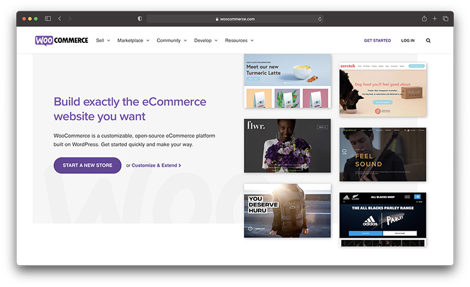
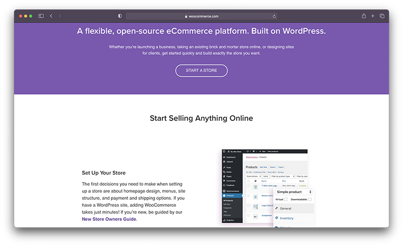

Se você já usou o WordPress para e-commerce, provavelmente já ouviu falar do WooCommerce. É a joia da coroa do mundo do comércio eletrônico e é considerado um dos melhores plug-ins para WordPress. Não só faz WooCommerce possuem uma grande coleção de recursos em um plug-in WordPress compacto, mas é totalmente gratuito. Nesta análise do WooCommerce, destacarei algumas das melhores ferramentas do WooCommerce, juntamente com algumas informações sobre quanto você realmente gastará ao instalar o plug-in de e-commerce. É bastante comum comparar WooCommerce para plataformas como Shopify or BigCommerce. Isso é perfeitamente bem, mas é importante perceber as principais diferenças. Para começar, todas essas plataformas de comércio eletrônico fornecem resultados semelhantes.
O objetivo é ter um site com funcionalidade de comércio eletrônico, e é isso que você obtém WooCommerce, Shopify, BigCommerce, e qualquer outra coisa. O processamento do pagamento é feito para você, você pode configurar produtos e criar um site sem muito conhecimento de codificação. No entanto, o WooCommerce difere dessas plataformas por um motivo importante: ele se integra ao sistema de gerenciamento de conteúdo WordPress de código aberto.

O WooCommerce é relativamente bom em ajudá-lo a aumentar seus recursos de algumas maneiras. Você pode recompensar os clientes por comprarem com você com cupons, esquemas de fidelidade e pontos. Ou o WooCommerce também oferece suporte para presentes gratuitos para estimular as vendas. Para a prova social, você pode pedir a seus clientes que deixem comentários ou avaliações com estrelas, o que melhora a credibilidade de sua loja. Para marketing de conteúdo, WooCommerce espera que você aproveite as vantagens do blog em seu site WordPress. Não há recursos reais de blog aqui, além daqueles que você obtém do WordPress. É o mesmo que SEO, espera-se que você use o que já está disponível. Em termos de otimização de mecanismos de pesquisa, WooCommerce é suportado pelas ferramentas básicas do mecanismo de pesquisa no WordPress. Isso significa que ele cria automaticamente títulos e metadados para os resultados do seu mecanismo de pesquisa. O WooCommerce não possui recursos de SEO, mas você pode adicionar plugins como o Yoast para melhorar a maneira de segmentar palavras-chave. O WooCommerce não possui muitos recursos de marketing integrados. Os e-mails automatizados são enviados quando alguém faz uma compra, então você pode absolutamente usá-los para o branding e informar as pessoas sobre outros produtos. No entanto, a sua melhor aposta é considerar um serviço de e-mail marketing como o MailChimp e, em seguida, integrar um formulário de e-mail optin. Ferramentas de mídia social e páginas de destino também estão disponíveis através de diferentes temas e plugins.
Para melhorar as vendas em sua loja WooCommerce, no entanto, você pode adicionar novas ofertas, vendas incrementais e vendas cruzadas conforme seus clientes estão finalizando a compra. Também existe a opção de uma seção de produtos relacionados em suas páginas de produtos para incentivar os clientes a comprar mais. A compatibilidade com vários plug-ins garante que você tenha várias oportunidades de melhorar sua taxa de conversão também por meio do marketing por e-mail. Você pode conectar seu site de comércio eletrônico a um plugin de e-mail para recuperar carrinhos abandonados e construir estratégias automatizadas de marketing por e-mail. As opções para sua solução de comércio eletrônico vão desde o Campaign Monitor até o Mail Chimp. WooCommerce também ajuda você a alcançar seus clientes onde eles estão para mais conversões potenciais de cartão de crédito. Isso inclui oferecer acesso a Anúncios do Facebook, Amazon, eBay e Google Ads também.